至高の精神展総集編PART.3に本郷仁さんが出品！
至高の精神展総集編PART.3に本郷仁さんが出品！
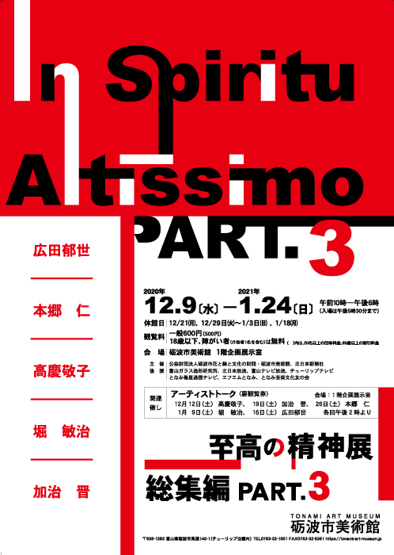
詳細は砺波市美術館のサイト をご覧ください。
をご覧ください。
本郷仁さんについては、 recommendをご覧ください。

豪農の館 内山邸「現代アートとの出会い展Ⅲ」開催中！
豪農の館「内山邸」にて、本郷仁さんを含め5名のガラス作家さんの展覧会が開催中です。趣深い建物とガラス作品とのコラボレーションをお楽しみできることでしょう。
併せて、この季節はお庭の紅葉も進んでいることと思います。会期は16日（月）までとなっています。
詳しくは「内山邸」のサイトをご覧ください。
本郷仁さんについては、 recommendをご覧ください。

大寺幸八郎商店さんのWEBサイトがリニューアル！
久しぶりに大寺幸八郎商店さんのWEBサイト をのぞいたところ、リニューアルされていました！
をのぞいたところ、リニューアルされていました！
大寺幸八郎商店さんのfacebook も賑やかでした。
も賑やかでした。
富山県内のメディアの他、日経WOMANや海外の雑誌にも取り上げられています。
今後の展開が楽しみになりました！
一度、大寺幸八郎商店さんのWEBサイトを訪れてみられてはいかがでしょう。
大寺幸八郎商店さんについては、 こちらもご覧ください。

recommendに新たにTRICONOTEさんを追加しました！
お洒落で真摯な薪ストーブのお店【TRICONOTE】
お店には薪ストーブとともにアンティーク家具や小物が並び、居るだけで楽しい気持ちになります。
富山市千里の可愛い外観のお店には様々な薪ストーブが展示してあります。
詳しくは
こちら をご覧ください。
をご覧ください。
TRICONOTEさんについては、 recommendをご覧ください。

来月は全国あちらこちらでタウの木さんの作品をご覧になれます！
One’s Wayのイベントでお世話になった「タウの木」さんの作品を9月は全国各地でご覧いただけます。
まずは岡山で！ 9月 2日(水)〜 8日(火):岡山天満屋１F
続いて埼玉で！ 9月10日(木)〜15日(火)：埼玉・ギャラリースペースM
さらに東京で！ 9月16日(水)〜22日(火)：銀座三越７F
地元の奈良で！ 9月19日(土)〜21日(月)：奈良工芸の粋 展 in 依水園
そして千葉で！ 9月15日(火)〜26日(土)：柏・嘉工房
無意識が作りだす作品は世界に一つだけ。
魂に共鳴する作品に出会えた時の感動は忘れることができません。

詳しくは「タウの木」さんのサイトをご覧ください。
タウの木 中村ヨウイチさんについては、 recommendでも紹介しています。

〇、Vol.5ガラス工房マル5周年展－Glass Studio MARU Exhibitionーのご案内！
「ガラス工房〇マル」さんの個展のご案内です。
2020年8月1日～15日（除く 水曜）
11：00～17：00
"いろやギャラリー"にて・・・・
詳しくはガラス工房○マルさんのfacebookページ をご覧ください。
をご覧ください。
ガラス工房○マルさんについては、 recommendをご覧ください。

本郷仁さんの個展「風景装置」のご案内
コロナ禍の中、みなさまいかがお過ごしでしょうか？
本日は、本郷仁さんの個展「風景装置」のご案内です。
２年ぶりの個展、とても楽しみです。
会期中、伊藤拓次氏によるパフォーマンス公演もあるとのこと。詳細が分かり次第、お知らせします。
詳しくは"じょうはな織館"のサイト でご確認ください。
でご確認ください。
会期：2020.8.15（土）ー9.22（火・祝日）
会場：じょうはな織館（富山県南砺市）
本郷仁さんについては、 recommendをご覧ください。

One’s Wayの庭で紫陽花鑑賞をどうぞ！
新型コロナウイルスの感染拡大防止のため、自由な行動がままならない昨今、みなさまいかがお過ごしでしょうか？
One’s Wayの庭では紫陽花が咲き始めました。今年は更に数が増えました。どんな色の花を咲かせるのでしょう。楽しみです。
写真は昨年の紫陽花です。
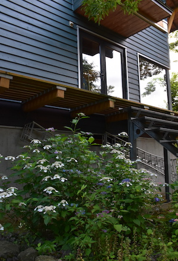
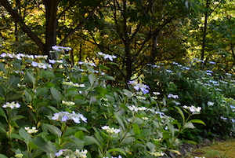
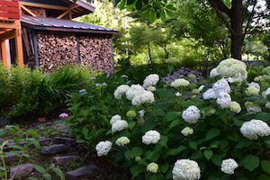
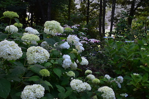
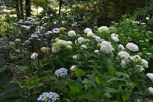
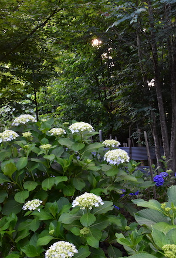
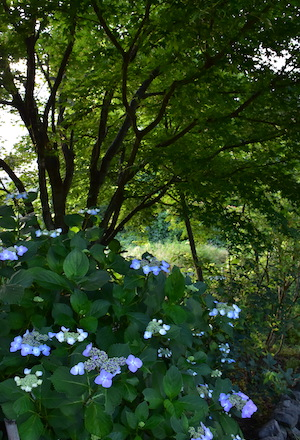
どうぞお気軽にお立ち寄りください。

One’s Way イベントについて
例年5月に開催していた「One’s Way ーそれぞれのあたりまえー」
今年は新型コロナウィルス の感染拡大を防ぐため開催を見合わせます。
庭の木々、草花は例年通りに芽吹き、花を咲かせています。
私たちはゴールデンウィーク中は家におります。
お構いはできませんが、お時間のある時にお越しいただきご自由に庭をご覧になっていってくださいませ。
「One’s Way 」の今朝の庭です。
コナラ、カツラの芽吹き
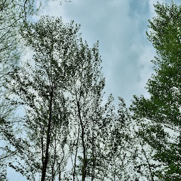
芽吹きの季節[One’s Way]のエントランス
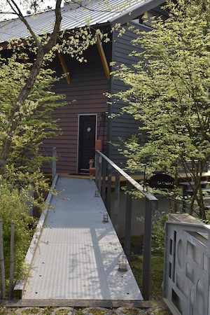
庭は緑のグラデーション
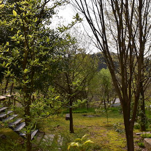
芽吹きのバックヤード
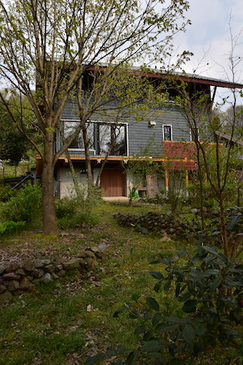
4月に入ってからの低温の影響でしょうか。去年に比べて芽吹きが遅いようです。ちょうど1年前の庭の様子はこちらをご覧ください。

職藝学院で木工や庭づくりを学べます！
”One’s Way”の庭づくりでお世話になっているLeaf'sさんのスタッフが教鞭をとっている職藝学院の公開講座のご案内です。
伝統工法での家づくり、木工家具づくり、こだわりのガーデニングなどの講座が開講されます。
詳細はこちら でご確認くださいませ。
でご確認くださいませ。
Leaf'sについては、 aboutをご覧ください。

タウの木 中村ヨウイチさんの作品を東京でご覧になれます！
日本橋三越本店で開催中の『～出会う・使う・つながる～ 日本のものあわせ』にタウの木さんが出品されます。
会期／2020年2月26日(水)～3月3日(火)※最終日は午後5時終了
日本橋三越本店 本館5階 ギャラリー ライフ マイニング
タウの木の中村ヨウイチさんを含め、日本各地で活躍中の作り手の作品が集まります。
詳しくは『日本橋三越本店』のサイト をご確認ください。
をご確認ください。
タウの木 中村ヨウイチさんについては、
recommendもご覧ください。
なお、同時期に富山のガラス作品も同じフロアでご覧いただけます。
詳しくは＜富山アイコニック＞の誕生と輝くボンボニエール展のサイト をご確認ください。
をご確認ください。

One’s Wayを本年もよろしくお願いいたします。
あけましておめでとうございます。
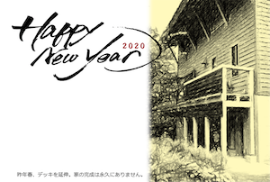
昨年は5月にOne's Way -Open House & Garden-を8月に氷屋さん、そして11月にはOne’s Way にオールディズバンドがやってくる！を開催しました。
起こしいただいたみなさま、ありがとうございました。
今年もOne’s Wayでみなさまとお会いできること楽しみにしています。